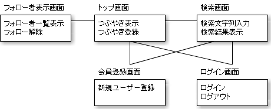

チームラボ オンラインスキルアップ課題
チームラボ オンラインスキルアップ課題
STEP3-2.画面仕様書,スケジュールを作ってみる
いよいよオリジナルWebサイトの作成に入っていただきます。一般的なソフトウェアの開発工程は設計、開発、テストの3つに分かれています。ここでは設計について、以下のステップにしたがって進めてみましょう。
- 作りたいサイトのコンセプトを考える
- 必要な機能を考える
- 必要な画面、画面遷移を考える
- 画面仕様書の作成
- スケジュールの作成
1. 作りたいサイトのコンセプトを考える
まずは自分で作りたいサイトのコンセプトを考えましょう！なんでも良いです。 誰かが何かに困っているなら、その人のためのサイトでも良いでしょう。 不便なことがあるなら、それを解決するサイトでも良いでしょう。 誰が、誰に、どんな価値を提供するサイトか？そのサイトの成功の定義は何か？を明確にしましょう。 複雑になりますので、お金がそのサイトで儲かるかどうかは、一旦この時点で考える必要はありません。 この時は、資料に落とす必要はありません。紙に手書きでもいいので書き出し考えてみましょう。
2. 必要な機能を考える
コンセプトが決まったら、ユーザに提供する機能を挙げていってみてください。 例えば会員登録、ログイン、画像の投稿、CSVのダウンロード、などなどコンセプトで考えた誰が、誰に、どんな価値を提供するか、を満たすために必要な機能を全部挙げて一覧にしましょう。 その一覧に、コンセプトにとって絶対必要な機能、あったら嬉しい機能に分けてみましょう。 これをすることで、スケジュールや開発のボリュームを調整することができます。また開発は絶対必要な機能から進めていきましょう。
3. 必要な画面、画面遷移を考える
必要な機能を出したら、次は必要な画面を出していきましょう。機能をユーザに使ってもらうためには当然画面が必要ですね。 この時、その機能がどんな画面で実現されるかを機能から考えてみてください。 例えばログイン機能はログイン画面もしくは、トップ画面で実現するのが良いでしょう。 検索機能は検索画面もしくは、トップ画面で実現するのが良いでしょう。 上記のように、機能からどんな画面が必要かがわかってくるはずです。
ひと通り、機能が実現される画面を出した後に、画面名を添えて画面一つにボックス一つという感じに一旦配置してみます。 配置した後、どの画面からどの画面へ遷移すべきか考えてボックス同士をつなげていきましょう。 トップ画面のボックスからは、検索画面のボックスや、ログイン画面のボックスや、会員登録画面のボックスへと線をひきます。 遷移がどうしてもつながらない画面がある場合は、画面が足りない場合です。ここで必要となる画面を追加していきましょう。以下はSTEP2のTwitterもどきの画面遷移の例です。

線を引いていくには画面の中身を想像する必要がありますね。この作業の中で、画面の中身を具体的にイメージしていくことが重要で、次の画面仕様書を書くためのインプットとなっていきます。 ただし、この段階で完全なものをつくる必要はありません。次の仕様書を作っていく中で、この画面遷移はどんどん良いものへと改善していくことになりますので、一旦たたきを作る感じで作っていきましょう。
4. 仕様書の作成
開発する前に画面仕様書を作成しましょう。画面仕様書を作る理由については、STEP2-8.画面仕様書とはをもう一度読んで確認しましょう。 特に自分の考えを具体的にし、自分以外の方に意見をもらい、改善するというサイクルは良いサイトを作っていく上で非常に重要なプロセスになりますので、ここでしっかり考えをまとめていきましょう。 3までにイメージした画面を具体的に仕様書に落としていきます。
STEP2で使用したTwitterもどき-画面仕様書のように1画面1シートで書いていきましょう。まず画面の大枠をオートシェイプから四角形を選んで配置します。そして、その中身の要素を配置していきましょう。 テキストボックスやテキストエリアも四角形を使って配置していきます。文字や文章も配置していきましょう。 リンクは青色文字にして文字下に線を引いておき、リンクとわかるようにしておきます。 ボタンも四角形を配置し、文字をいれます。 四角形と文字で表現できると思いますが、どうしても表現できない部分は、工夫して図形を使って表現してみましょう。重要なことは、他の人に自分のイメージをしっかり伝えるということです。
次に、注釈をつけていきます。 注釈は、画面の要素だけでは表現しきれない、自分のイメージをテキストでまとめ、伝えることが目的となります。 まず、それぞれの要素が何を表すかを記載していきます。 リンクであれば、押した際にどの画面に遷移するかを記載しましょう。 ボタンも同じです。押した際に何かを処理する場合もできるだけ詳細に記載しましょう。 文字の記載部分についても、注釈をつける必要があります。もし、条件によって文字が変化したり、消えたりする場合は その条件も記載しましょう。逆に常に同じ文言の場合、つまりHTMLの中で表現されるような文字や文章には注釈は必要ありません。
ここまでのステップで、画面仕様書の中で、画面の種類、画面の中の要素、要素が何を表すか、それがどんな風に変化があるかが資料に記載されているはずです。 画面仕様書を考えて行く中で、当然画面が増えたり、画面遷移が変更することがあったりしますが、全く問題ありません。むしろどんどん改善していきましょう。 画面遷移、画面の種類、画面の中身が決まってくると、この段階で、画面仕様書は50％完成しています。 それ以上は、その要素の細かい仕様を詰めていくことになりますが、そこは今回は割愛します。 細かい仕様とは表示されている文章は、何文字で、切れるのか、入力チェックは何文字で制限するか、入力できる文字の型は何か、 など、非常に細かい仕様になりますが、サイト全体への影響は少なく、開発しながら、決めていって構いません。 多くのメンバーで開発する場合は、しっかりこのタイミングで決めることが重要ですが、少人数で開発を行う場合は、この時点で開発に入ることもありますので、ケースバイケースであると思ってください。
5. スケジュールの作成
ここまでの資料で、開発の前段階に決めておくことは決まりました。いよいよ開発といきたいところですが、その前にこれから行う開発のスケジュールを自分で考えてみましょう。 2で考えたように絶対必要な機能が何であるかを意識して組んでみると良いでしょう。